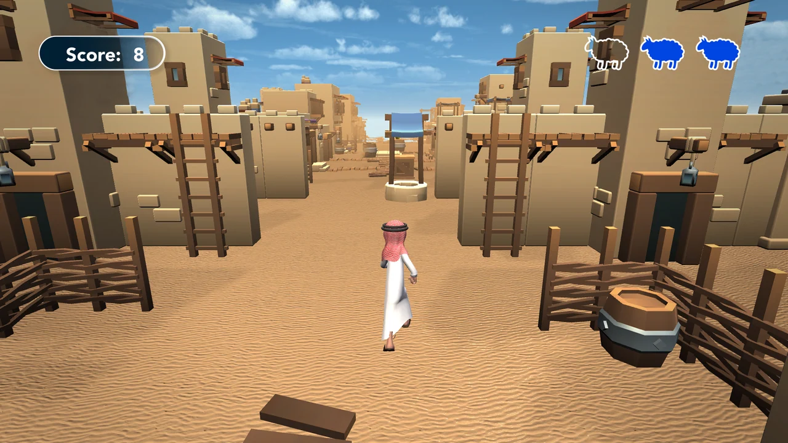
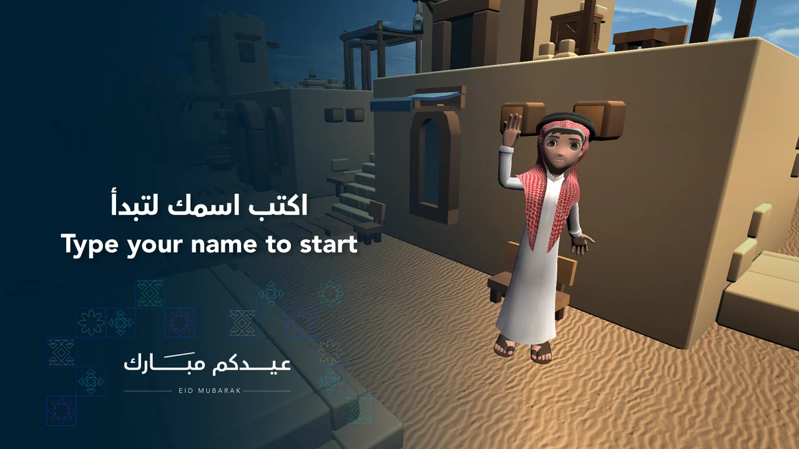

Score and status at the top
Artboard 3 shows a central running character, a village environment, a Score: 8 panel and three sheep-shaped icons.
A complete interface frame around a village route.
Explore the story
Keep score and status readable while leaving the route open.
A rear-facing character view moves visually into a low-poly village scene. The score panel and sheep-shaped icons sit above it, with related entry, game-over and leaderboard artboards.
Artboard 3 shows a central running character, a village environment, a Score: 8 panel and three sheep-shaped icons.
Other native artboards supply entry, game-over and empty leaderboard layouts; no participant records were used.
The native gameplay artboard uses a rear camera view down a sandy village lane, with low-poly buildings, ladders, fences and pots defining the route.
Explore the complete compositions and interface states. Select any image for a closer look.
02 / PROJECT IMAGES
Select a view to explore.
Runner-game layout showing a character in a sandy low-poly village, a score panel and three sheep-shaped icons.
Runner entry artwork with a bilingual name prompt at left and a stylized character waving in a sandy village at right.

Structure, interaction and visual decisions that give the work its character.
RoleContribution awaiting confirmation
AssetsPrivate evidence draft. Individual contribution, implementation and public-use permission remain unverified. Native files establish saved artwork, not personal authorship or original modeling. Supplied, licensed, collaborator and AI-assisted components require separate attribution. Character, environment and gameplay image are upstream/supplied until their origin is confirmed. Do not describe the scene as original modeling or verified playable delivery.
StatusPrivate native-artwork draft; contribution, implementation and public use unverified